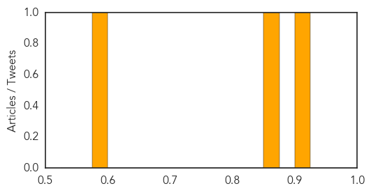
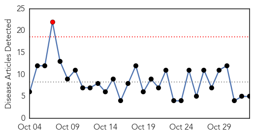
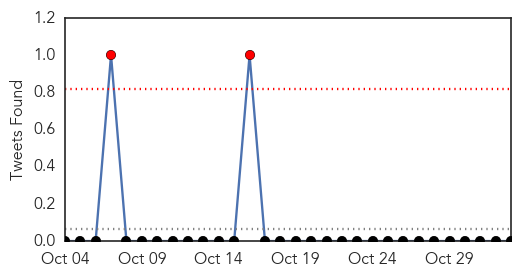

Meningitis
30-Day Web Trend
2 alerts, 4 warnings

30-Day Twitter Trend
0 alerts, 0 warnings

Article Locations

Article Confidences
Top Articles:
Top Tweets:
-
No tweets found for Nov 02, 2014
Dengue Fever
30-Day Web Trend
1 alerts, 0 warnings

30-Day Twitter Trend
2 alerts, 0 warnings

Article Locations

Article Confidences

Top Articles:
Top Tweets:
-
No tweets found for Nov 02, 2014